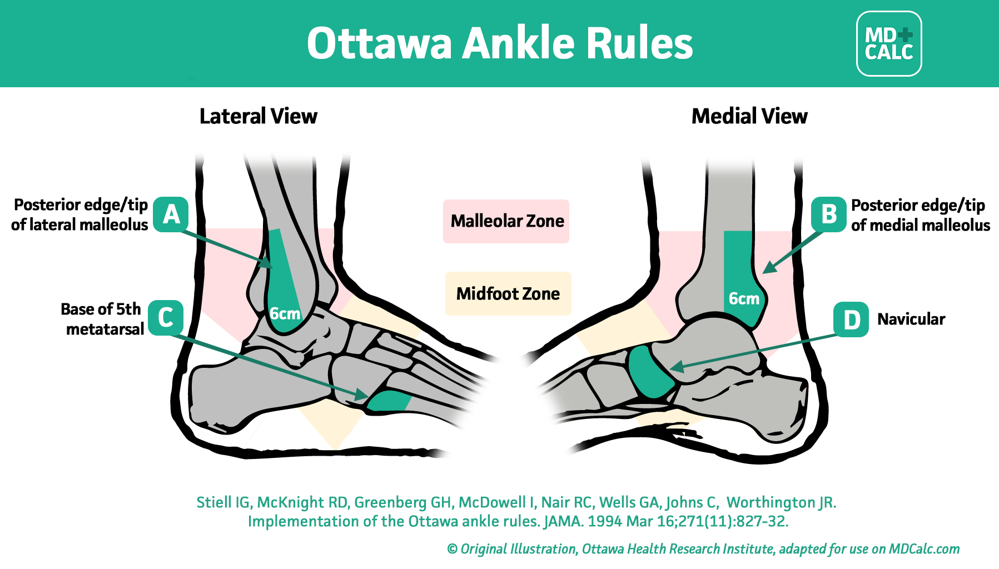

This case challange was developed based on a real case.
Diagnosis:Intra-articular navicular fracture
This patient was initially diagnosed with a sprained ankle. Initial referral order was PWB walking.
With the history, physical findings and positive Ottawa rule, a fracture was suspected. The abnormalty in XR warranted advanced imaging (eg. CT or MRI) to detect obstructed fracture lines or occult fractures.
This patient was sent to AED by the physiotherapist in charge, and CT confirmed the diagnosis later.
The patient was then received for ORIF in the orthopaedic ward with post-op orders of NWB 6/52, PWB 6/52.
Epidemiology
Navicular fractures are responsible for approximately 5% of all foot fractures and 35% of all midfoot fractures.
It may present with pain, swelling or haematoma directly over the mid-foot. Stress fractures in athletes and construction workers may present with vague pain and swelling over the mid-foot, which worsens with exercise.
Pathology
The fracture occurs via two main mechanisms:
1. chronic overuse injuries causing a stress fracture (often in athletes)
2. acute high-energy trauma where the head of the talus impacts the concavity of the navicular bone
Case explantion:
Question 1
Option 1: Palpation to L foot
Correct. Palpation of foot found severe tenderness over medial mid-foot which navicular was located. Ottawa ankle rules was positive with the fact that patient was unable to weight bear.

Fig. 1 Ottawa ankle rule
Evidence supports the Ottawa ankle rules as an accurate instrument for excluding fractures of the ankle and mid-foot. The instrument has a sensitivity of almost 100% and a modest specificity, and its use should reduce the number of unnecessary radiographs by 30-40%. A patient who presents without the symptoms is less than 1% likely to have a fracture.
Option 2: Check Xray
Correct. Xray showed intra-articular navicular fracture. Alignment within normal limits.
Radiographic features:
Plain radiograph:
Plain radiographs are the best initial test in a suspected navicular fracture. Their sensitivity for identifying navicular fracture is low; however, lateral and oblique radiographs provide the greatest chance of identifying a fracture. Rarely fractures of an accessory navicular bone (if present) are also possible and may be visible.
CT:
CT is more sensitive for identifying navicular fractures. It also allows for the assessment of the extent of the fracture line and the degree of comminution.
MRI:
T2: may demonstrate areas of hyperintensity over the fracture site indicating bone oedema. It should be noted that MRI is more sensitive than CT in identifying stress fractures.
Option 3: Ankle AROM
Correct. You can follow "look, feel, move" or "TOTAPS" diagnostic squence. The severe limited AROM demonstrated would also support the presence of a major fracture or intra-articular fracture.
Navicular stress fractures in athletes and construction workers may present with vague pain and swelling over the mid-foot, which worsens with exercise. These patients generally have a normal range of motion and a normal neurovascular examination.
Option 4: Anterior drawer test (ankle)
Incorrect. In such high irritablilty and strong sign of presence of fracture, special test is contraindicated. Anterior drawer test may worsen the condition by displacing the fracture in this case.
Question 2
Option 1: WBAT with frame and ankle walker
Incorrect. Weight bearing on a foot with an intra-articular navicular fracture may make the filament displace.
Option 2: Free active ankle mobilisation ex
Incorrect. Mobilising an intra-articular navicular fracture may make the filament displace.
Option 3: Refer OPD PT for further rehabilitation & Option 4: Inform doctor for re-assessment +/- further imaging
Further rehabilitation may not be appropriate before reviewing by doctor.
This patient may need operative management instead of conservative one.
Rarely, navicular fracture could be treated conservetively if the fragments are small and undisplaced. In that circumstance, it will not lead to any instability of the talar-navicular joint.
In contrast, larger or displaced fragments may be fixed with lag screws.
Fig 2. Insertion a cannulated lag screw according to the standard technique. A washer is typically used. In contrast to lag screws inserted in the diaphysis, these lag screws will typically not penetrate the far cortex, as this would damage the opposite articular surface.
The strict non-weight bearing should be maintained until there is evidence of healing and any transfixion K-wires (6–12 weeks) or bridging devices (min 12 weeks) are removed.
Reference:
1. AO Surgery Reference, surgeryreference.aofoundation.org.
2. Rasmussen C, Jørgensen S, Larsen P, Horodyskyy M, Kjær I, Elsoe R. Population-Based Incidence and Epidemiology of 5912 Foot Fractures. Foot Ankle Surg. 2021;27(2):181-5. doi:10.1016/j.fas.2020.03.009 - Pubmed
3. Kerkhoffs, G.M., van den Bekerom, M., Elders, L.A., van Beek, P.A., Hullegie, W.A., Bloemers, G.M., de Heus, E.M., Loogman, M.C., Rosenbrand, K.C., Kuipers, T. and Hoogstraten, J.W.A.P., 2012. Diagnosis, treatment and prevention of ankle sprains: an evidence-based clinical guideline. British journal of sports medicine, 46(12), pp.854-860.
4. Radiopaedia.org
Case creator: Mr. Thomas Mak
← Back to Homepage